algae_research log
the efforts of growing an alive film.
films are like plants
they can’t grow without time
and light
the only difference between plants and films is that
film is dead
and plants are alive
Would it be possible to have an alive film ?
A film that grows as it is being ?
Something that has no set form ?
Algae are a very large and diverse group of eukaryotic organismshttp://en.wikipedia.org/wiki/Algae. Algae are photosynthetic organisms that occur in most habitats, ranging from marine and freshwater to desert sands and from hot boiling springs to snow and ice. They vary from small, single-celled forms to complex multicellular forms, such as the giant kelps of the eastern Paci c that grow to more than 60 meters in length and form dense marine forests. Algae are found in the fossil record dating back to approximately 3 billion years in the Precambrian. They exhibit a wide range of reproductive strategies, from simple, asexual cell division to complex forms of sexual reproductionhttp://botany.si.edu/projects/algae/introduction.htm. algae is, at least the one i am living and working with, algae she is, single minded, strong minded and whole.
recipes for growing algae
the start
algae sample picked up from a lake in Haagse Hout Park, Den Haag NL
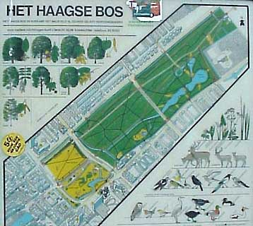
4 small plastic
1 petri dish
1 glass bottle
16mm clear lm leader sugar + algae sample + water
16mm clear lm leader sugar + algae sample
16mm clear lm leader sugar + half water + half algae sample
developed lm + algae sample
16mm clear lm leader sugar + algae sample
16mm clear lm leader sugar + algae sample
with the purpose of growing algae on lm, the experiments mentioned above where set up on early October, from the research done online it seemed as an easy process that would take about a month to develop.
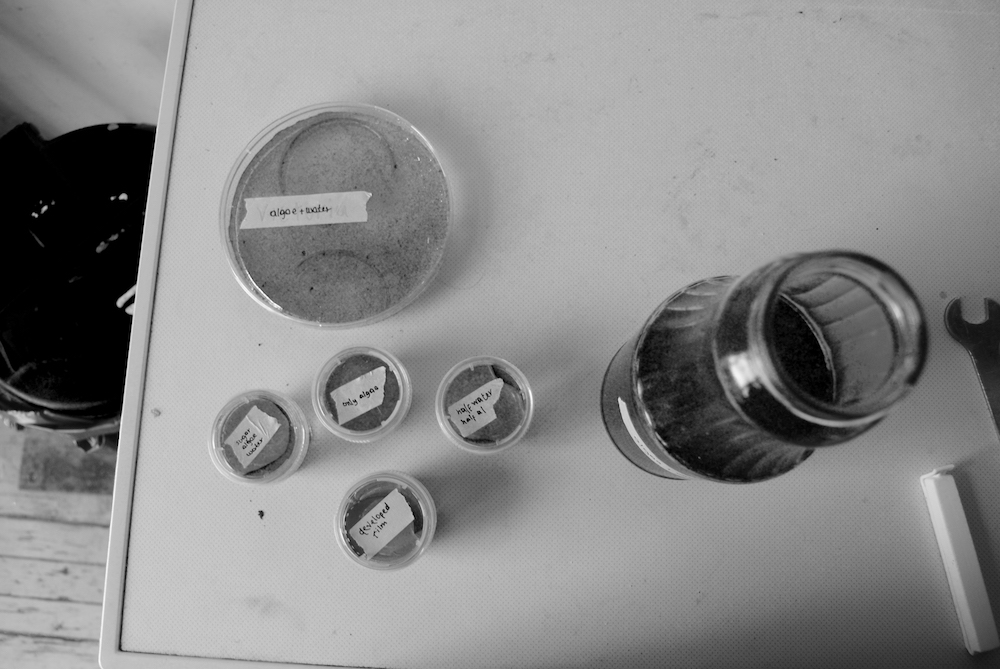
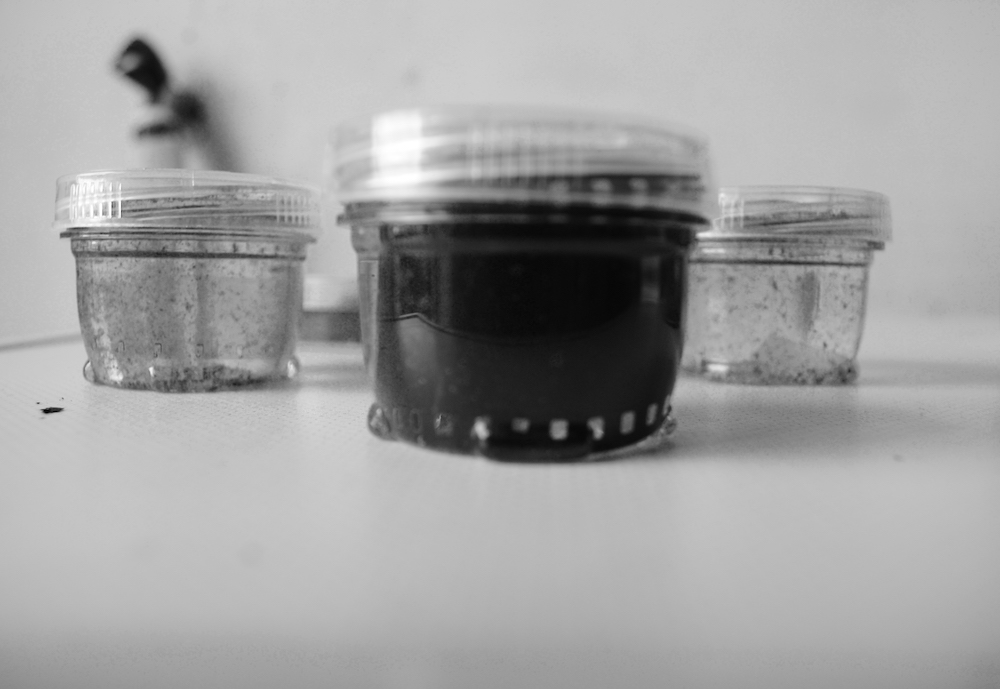
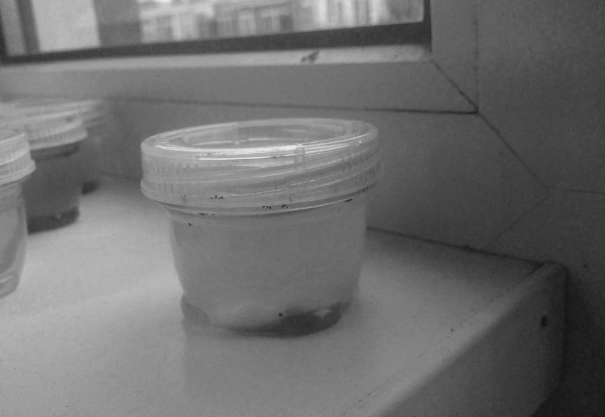
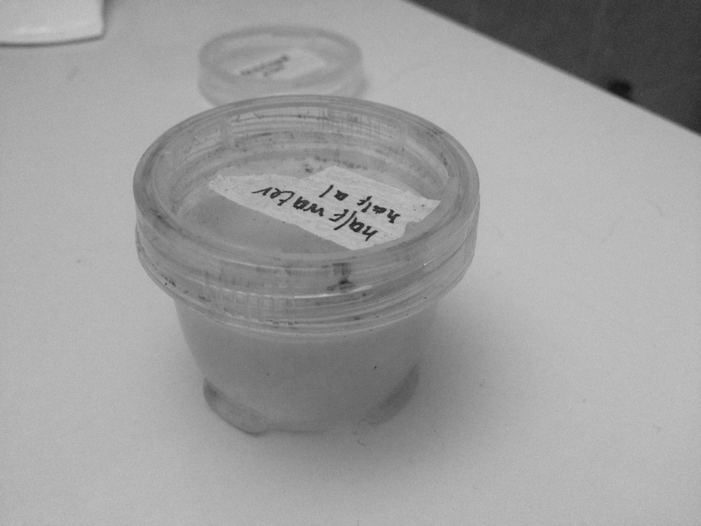
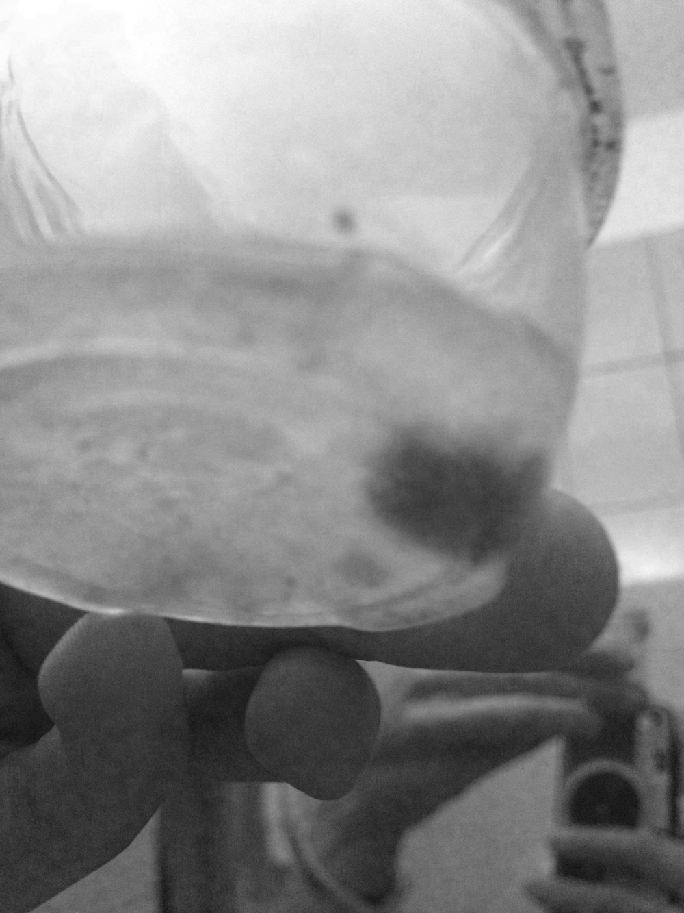
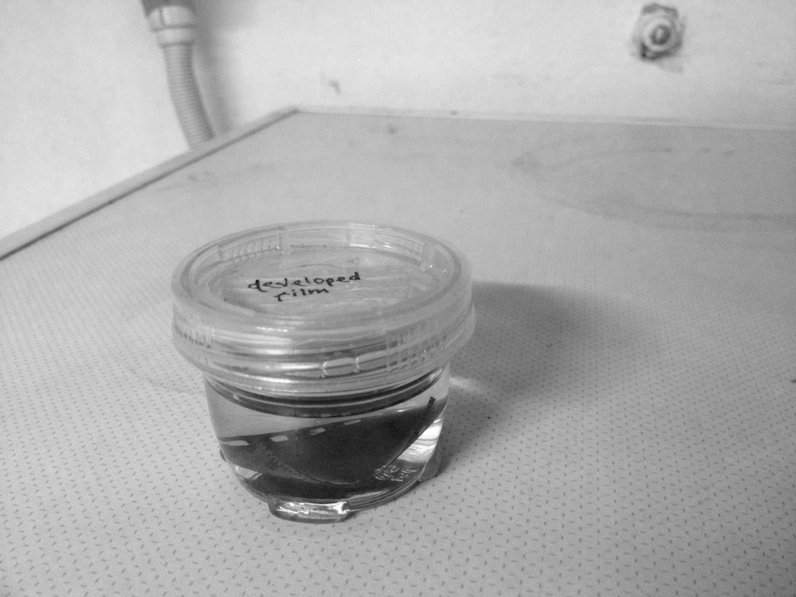
- and then it kept dying,
- and dying, and dying,
- and dying, and dying,
- and dying, and dying,
- and dying, and dying,
- and dying, and dying,
- and dying, and dying,
- and dying, and dying,
- 1 specimen died
- 2 specimens died
- 3 specimens have died
- 4 specimens died
action taken to stop death :
- moving it from outside to inside (cause of death: coldness ?)
- giving it more access to sunlight (cause of death: not enough sunlight ?)
- feeding it sugar [ cause of death: not enough food ?] (you can’t feed algae sugar, algae doesn’t eat sugar)
2 samples survived
2
eventually i went to pick up some more and i found out that the algae in the park has died as well, perhaps it was a seasonal thing perhaps i was incapable of doing it. it was extremely frustrating and devastating in any case.
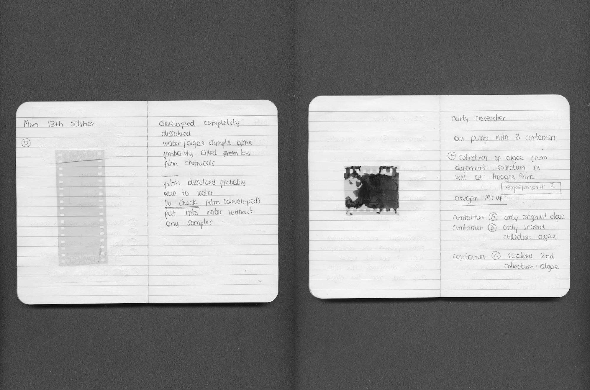
upon the occasion of all the deaths measurements where taken : online research concludes that algae likes breathing
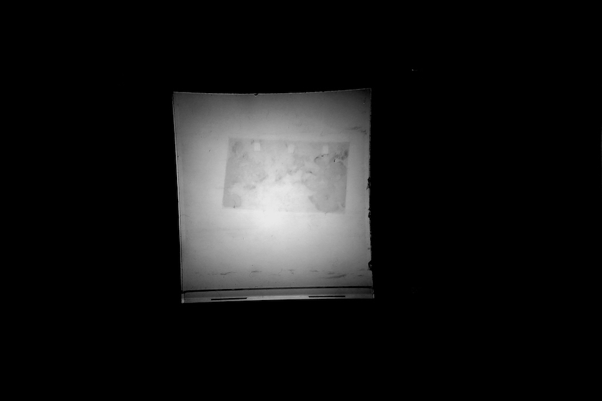
The carbon dioxide is consumed by the algae which release oxygen. The bottle contains a solution of water, algae and nutrients. Room air is passed through the bottles using a standard aquarium bubbler stone where the CO2 is absorbed by the algae and oxygen releasedhttp://www.instructables.com/id/Simple-Algae-Home-CO2-Scrubber-Part-1/.
It seems like this is the reason why people with aquariums have so much algae growth and look for ways to avoid it.
there wasn’t any film placed, focusing on keeping the algae alive seemed more important at the moments

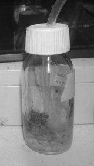
REST IN PEACE ALGAE
3/11/14-17/11/14
if the mountain won’t come to muhammad, then victoria will go to algae.
maybe she is very big about staying where is, i move all the time, maybe we are suffering from sort of location gap. we could have different attitudes towards staying, and she is not willing to comfort with mine i should.
3 lines of 1m clear film leader were taken to Haagse Hout Park, Den Haag NL and installed in the river bank, hoping to successfully have algae grown on them
after 1 week : 2 pieces were there, one was lost
after 1 week and 3 days : all 3 pieces were gone
2 more lines of 1m clear film leader were taken to Haagse Hout Park, Den Haag NL and installed in the river bank, hoping to successfully have algae grown on them
this time extra carefull care was taken when mounting them
after 3 days: all pieces were there
after 6 days : all pieces were there
after 9 days : all pieces were gone
why do i do this to myself?
observation through november
what thought to be blooming algae turns out to be ‘duckweed’ → as a derivative it seems that there actually early any algae on the collection for the ‘oxygen set up’ Duckweeds, or water lens, are owering aquatic plants which oat on or just beneath the surface of still or slow-moving bodies of fresh water and wetlands
there was another container collected that seemed to be a mix of algae and duckweed, dead the following day a er brought home
bottles had to be refilled with water constantly especially bottle A , bottle B was doing better in the start now acts just like bottle A dead
bottle A showed signs of fast algae growth but then remained stationary
it turns out to be some sort of slimy bio lm, not actual growth
algae from the original collection small containers A & B show proper signs of growth & seem alive

the internet said
the majority of the information I find is through aquarium maintenance forums perhaps, with that in mind I visited a aquarium supply store their aquarium had a little bit of algae growing on them, and they mostly sold stuff to kill algae, but I already do that for free however the rather helpful store manager provided me with a flyer identifying type of algae and product against. perhaps if I identify algae it will help me find the nutrients it’s missing or the environment it mind to remain alive
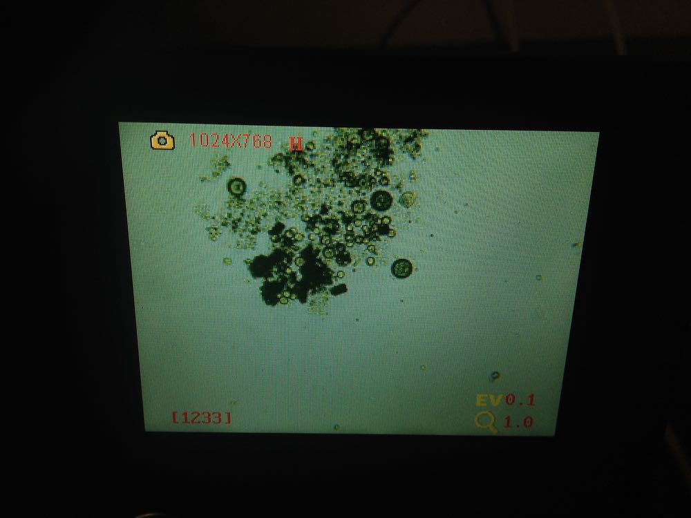
algae from containers A & B were observed under the microscope, things are moving, it’s aliiiiiiveeeeee! it’s aliiiiiiiiveeeeee!
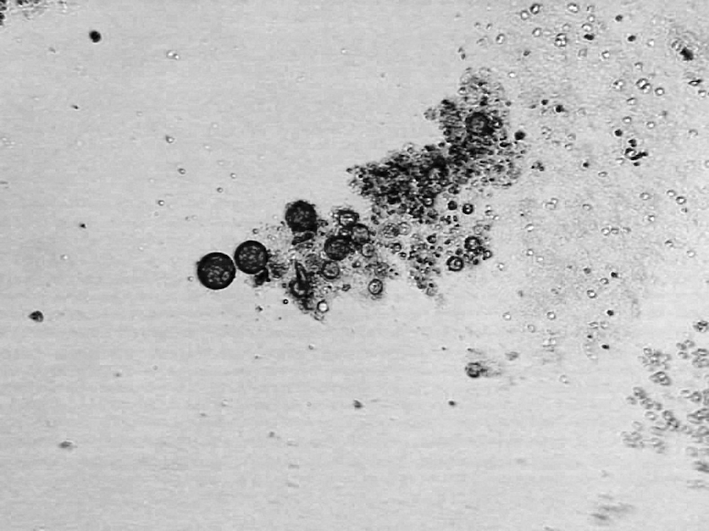
algae with the help of the yer about prevention of algae) was identi ed as of the species chlorella ( ‘ oating algae’)
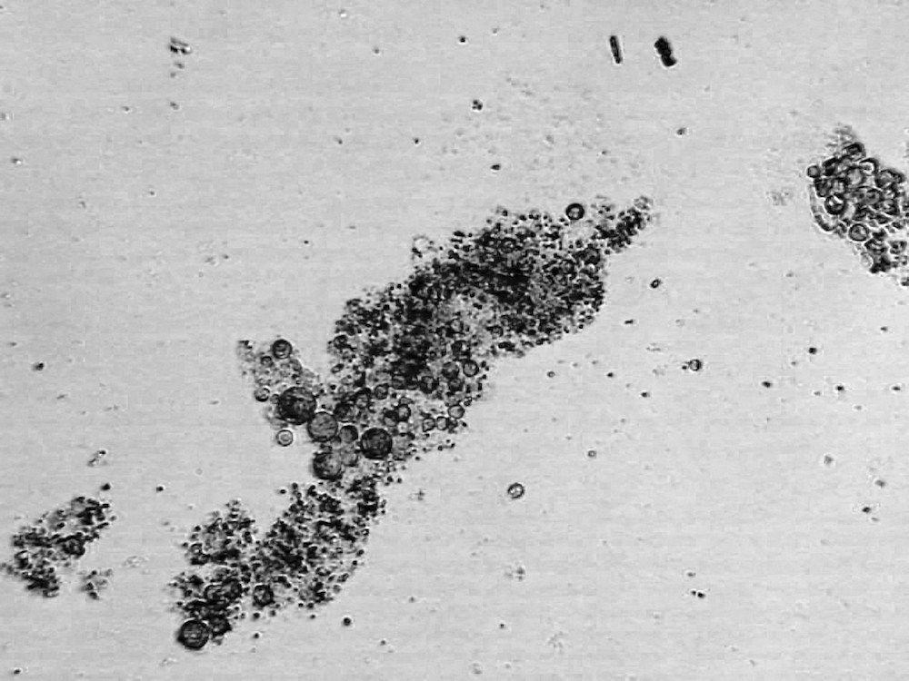
there is also some algae growth on the clear lm leader
the lm was also observed under the microscope, and things are moving as well, it’s so alive

Chlorella is a genus of single-cell green algae belonging to the phylum Chlorophyta. It is spherical in shape, about 2 to 10 μm in diameter, and is without agella. Chlorella contains the green photosynthetic pigments chlorophyll-a and -b in its chloroplast. rough photosynthesis, it multiplies rapidly, requiring only carbon dioxide, water, sunlight, and a small amount of minerals to reproducehttp://en.wikipedia.org/wiki/Chlorella